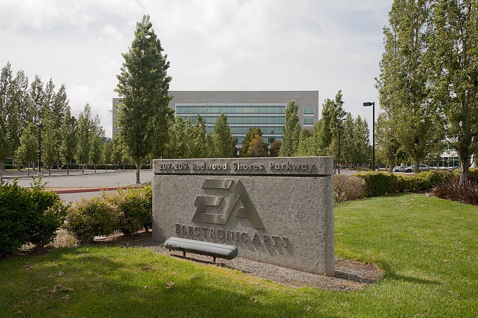

Vol. I · No. 156 · Saturday, October 31, 2026 · 13 items · 9.9 min read
The bill for AI reaches the credit markets, Hormuz burns again, and Weil’s rivals divide what is left.
Markets & AI · Menlo Park and Seattle
S&P puts Meta on negative outlook as the cost of AI reaches the credit markets and the Nasdaq falls 2.8%
The entrance to Meta’s headquarters in Menlo Park, California. LPS.1 / Wikimedia Commons
S&P Global Ratings revised its on Meta Platforms to negative from stable on Friday, citing “significant uncertainty around its capital spending and free operating cash flow,” Reuters reported. The agency forecasts free operating cash flow deficits of $39 billion this year and $71 billion in 2027, and said leverage could pass the 1.0 times limit for Meta’s current rating as early as 2027. Meta guides 2026 capital spending at $135 billion to $145 billion.
The same day, Bloomberg reported that Amazon had set up a of up to $80 billion, available from early 2027 to the third quarter of 2028, to borrow against AI hardware it buys. Nvidia is weighing a on billions of dollars of debt for ’s West Virginia data center, whose first building Anthropic contracted for $44.6 billion, TechCrunch reported. And told clients Anthropic may list with a rating “in the BB range or above,” below investment grade, the Financial Times reported.
“We are less certain that it will curtail its spending as previously anticipated.”
S&P Global Ratings, on Meta, via Reuters, Oct. 30
Stocks fell. The Nasdaq Composite dropped 2.84% to 25,442.31 and the S&P 500 lost 1.83%, TheStreet reported, leaving the Nasdaq down 5.2% for October, its worst month since March 2025, according to Yahoo Finance. Intel fell about 29%, its worst day since 1974, on a weak forecast. “Strong AI demand is no longer enough on its own,” said analyst Daniela Hathorn.
News · Strait of Hormuz · cross-spectrum LCR
Iran says four tankers struck mines in Hormuz as Qatar carries a revised draft to Tehran and Brent settles at $117.64
Iran’s Revolutionary Guard said Friday that a supertanker carrying more than 2 million barrels of oil struck a naval mine and caught fire in the Strait of Hormuz, the fourth tanker explosion of the day; the AP could not verify the claims. Oman evacuated 25 crew from the burning Panama-flagged tanker RITI off Musandam, and logged a projectile strike on another vessel. settled at $117.64, up 2.4%, and rose 13.6% in October, Reuters reported.
returned to Tehran with edits to a draft agreement and expect an answer by the weekend, CBS reported, while a senior Iranian official told Reuters they brought “unacceptable” ideas. President Trump said the war is “going to get wrapped up soon.” The Pentagon’s count of American dead stands at 23.
AI
Who inherits a chatbot’s conversations
AI & Law · Wilmington
A judge clears the Character.AI auction with Disney as the $20 million stalking horse and urges a privacy ombudsman
Judge Brendan Shannon of the U.S. Bankruptcy Court in Delaware approved bidding procedures Friday for Character Technologies, maker of Character.AI, with Disney as at about $20 million for a non-exclusive technology license and the hiring of staff, not the platform or user data, Law360 reported. Rival bids must clear $21.7 million. Shannon overruled objections from more than 30 states and D.C. and said he would “strongly encourage” the company to appoint a . Bids are due Nov. 20, with an auction Nov. 23.
Markets & Deals
An IPO unwinds after pricing, the Fed’s hawks speak, and a Brickell hotel changes hands
IPOs · New York
SoftBank-backed OPay pulls its $304 million NYSE listing after pricing, citing a foreign regulator’s inquiry
The New York Stock Exchange on Broad Street, where OPay’s shares were halted before they traded. Billie Grace Ward / Wikimedia Commons
OPay, the Nigerian payments company backed by SoftBank, withdrew its New York IPO on Friday after pricing 16 million at $19, , raising $304 million at a valuation of about $4 billion, Reuters reported. OPay and its underwriters, led by Citi, Deutsche Bank and Standard Bank, “mutually agreed to postpone the ,” citing an inquiry in an unnamed foreign jurisdiction.
The shares never traded. At 2 p.m. they were indicated to open at $16.25 to $16.75, below the offer price, and at 3:30 p.m. the exchange halted the stock “with news pending,” Nairametrics reported. OPay said the probe “should not be misconstrued as a reflection on the Company’s business performance.” Closing had been set for Nov. 2, alongside a private placement of up to $200 million from Stanbic Africa.
Rates · St. Louis and Dallas
Two Fed presidents call for more rate increases as Treasuries finish October with a rally anyway
St. Louis Fed President Alberto Musalem told the on Friday that “additional firming of monetary policy will be necessary, and soon,” and Dallas Fed President Lorie Logan said the Fed needs at least . The 10-year Treasury yield ended near 4.93% and the two-year near 4.60%, per Trading Economics, after a fall of more than 30 basis points in October as money left tech stocks.
’s board said Friday that BASF’s raised offer of €24 a share, about €11.18 billion, was not enough to begin formal talks, though it asked BASF to explain its rationale, Reuters reported. Evonik rejected €22.15 in September. BASF said it was surprised and would not overpay, while acknowledging “Evonik’s willingness to engage in discussions.” Chief executive Markus Kamieth called the deal a “strong German response to global competition.”
Real Estate · Miami · South Florida
Gencom and White Bridge buy the InterContinental Miami from a Chinese state insurer for about $300 million
Miami-based Gencom and bought the 652-room InterContinental Miami at 100 Chopin Plaza for about $300 million, The Real Deal reported Friday, citing Bloomberg. A buyers’ spokesperson confirmed the sale but not the price, which works out to about $460,000 a key, 9% above the Florida full-service average tracked by MSCI. The seller was Strategic Hotels & Resorts, owned by . The same day, the ULI and PwC Emerging Trends report ranked Miami third for 2027.
Crypto · Global · cross-spectrum LLLR
Analysts tie the record $6.3 billion Binance theft to North Korea as $3 billion is frozen
Blockchain analysts TRM Labs and Chainalysis attributed the from Binance, most of it taken within about 20 minutes on Thursday across 10 blockchains, to North Korea’s group. About $3 billion is frozen, more than $2.3 billion of it by Tether and Circle, Reuters reported. Co-chief executive Richard Teng said “our investigation has not attributed responsibility to any individual.” Bitcoin hit a six-week low of $76,368.
Law & the Courts
Weil’s practices scatter, and two courts check the Justice Department before Election Day
Law & the Profession · London and New York
Rivals carve up Weil as Gibson Dunn takes its London funds team and an AI law firm bids for the brand
767 Fifth Avenue, Weil’s New York headquarters. Pablo Costa Tirado / Wikimedia Commons
Gibson Dunn is taking Weil, Gotshal & Manges’ London private funds team of almost 40 lawyers, including 10 partners led by James Bromley and James Sargent, City AM reported Friday, and Simpson Thacher is set to hire London private equity partner Lewis Blakey, Legal Business reported. Sullivan & Cromwell and Paul Weiss are talking with Weil associates and trainees, and Paul Weiss has already hired several partners, the ABA Journal reported. The is expected this week.
Crosby, an that has raised about $85 million, bid for Weil assets including its trademark, brand and some internal data, TechCrunch reported, following The Information. Terms were not disclosed. A former Weil partner told City AM it was “a Titanic situation.” Departing partners take their hourly matters under New York’s rule.
News · San Francisco · cross-spectrum LLLCR
A judge bars Justice Department threats against election officials as the Ninth Circuit again refuses to set aside California ballots
Judge Trina Thompson of the Northern District of California issued a Friday barring the Justice Department and Homeland Security from threatening or coercing election officials to stop processing ballots of voters the government calls ineligible, citing likely violations of of the Voting Rights Act. Unions and the NAACP brought the suit. A Ninth Circuit panel separately ruled 2-1 against the department’s bid to set aside about 20,000 California mail ballots, finding “no feasible way to identify and segregate the ballots of specific individuals.”
The World
Atlanta rehearses December’s Doral summit
News · Atlanta · cross-spectrum LLLC
Rubio opens the G20 foreign ministers’ meeting in Atlanta with Lavrov present and the group photo cancelled
Downtown Atlanta, host of the G20 foreign ministers’ meeting. London looks / Wikimedia Commons
Secretary of State Marco Rubio opened a two-day meeting of G20 foreign ministers in Atlanta on Friday, ahead of a December leaders’ summit at Trump’s resort, telling delegates the world faces a “moment of choosing.” The United States cancelled the customary group photograph after European diplomats objected to posing with Russian Foreign Minister Sergei Lavrov, two U.S. officials told the AP.
EU foreign policy chief Kaja Kallas said Lavrov “put forward a lot of lies, a lot of false narratives.” Lavrov attacked Europe’s “arrogant boycott” and called a brief exchange with Rubio a “decent talk,” AFP reported. Ukraine was not invited, is absent, and China sent a deputy foreign minister. The meeting ends Saturday with a rather than a joint declaration.
Entertainment & EASL
Buyout debt picks a franchise, and a sponsor wants out of LIV
Video Games · Redwood City
EA closed BioWare and cancelled Mass Effect to fund a new Star Wars Battlefront under $18 billion of buyout debt, Bloomberg reports

Electronic Arts’ headquarters in Redwood Shores, California. Wikimedia Commons
Electronic Arts shut and cancelled its next Mass Effect game because it could not fund two science-fiction projects costing “hundreds of millions” each, choosing a Star Wars Battlefront 3 from DICE and Respawn, Bloomberg’s Jason Schreier reported Friday, according to Game Developer and VGC. The led by Saudi Arabia’s Public Investment Fund left EA with about $18 billion of debt and more than $1 billion a year of interest.
Laura Miele, president of EA Entertainment and BioWare’s main advocate, lost ground to executives from the sports side, the report said. EA said the decision followed “months of planning, review, and analysis.” BioWare co-founder Greg Zeschuk told 80.lv that “none of these people have ever made a game.” The Mass Effect project lost up to two years helping finish .
Sports Business · New Jersey
Salesforce asks the LIV Golf bankruptcy court to free it from its sponsorship, blaming AI features that never worked
Salesforce asked the bankruptcy court in New Jersey to force to decide quickly whether to its $6.75 million-a-year sponsorship through 2029, and said it prefers rejection, Bloomberg Law reported Friday. Salesforce says LIV never delivered a fan “digital caddie” or live AI predictions and that its Agentforce chatbot erred at events. The next payment is due Jan. 4, two days before LIV’s restructuring takes effect. A hearing is set for Nov. 19.
Compiled by Matthew Yellin · mattyellin.com · Est. May 2026 · A cross-spectrum brief drawn each morning from wires, filings, and the trade press